地政学
ラゴスは正式首都ではないが、ナイジェリアの港湾、金融、メディア、人材を握り、ギニア湾と内陸経済を結ぶ。石油国家の富、移民、治安、外交イメージが集まる沿岸都市で、アフリカ最大級の市場でもある要衝だ。
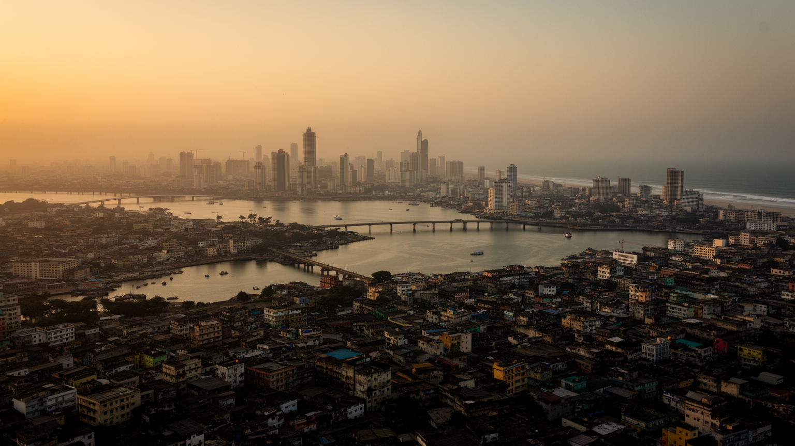
🇳🇬 ナイジェリア / アフリカ / World City Atlas
大西洋のラグーン、港湾、映画産業、金融、教会とモスク、渋滞と露店が重なり、西アフリカの未来と不均衡を映す巨大都市。
都市の骨格
ラゴスは島、砂州、本土、橋、港、幹線道路が複雑に結びつき、金融と露店、豪邸と水上集落を同じ通勤圏に置いている。
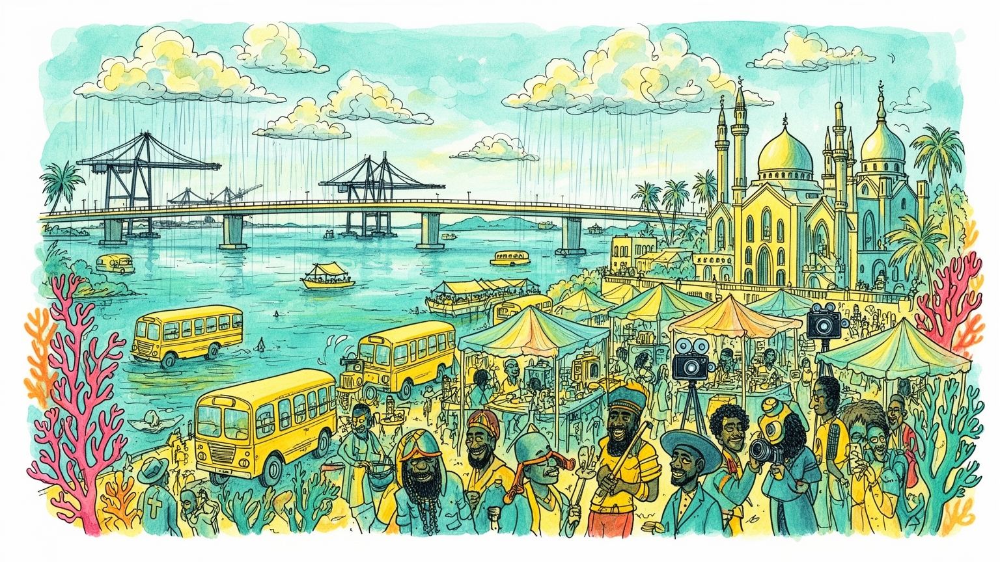
ラゴスは正式首都ではないが、ナイジェリアの港湾、金融、メディア、人材を握り、ギニア湾と内陸経済を結ぶ。石油国家の富、移民、治安、外交イメージが集まる沿岸都市で、アフリカ最大級の市場でもある要衝だ。
港湾、銀行、通信、広告、映画、音楽、製造、建設、露店、配車、家事労働が都市を動かす。公式雇用と非公式経済は分けにくく、渋滞と電力不足の中で働く人の工夫が成長を支える。若者や移民の職探しも街に濃く映る。
ヨルバ文化、英語圏のメディア、ノリウッド、アフロビーツ、ペンテコステ派教会、モスク、祭礼が重なる。信仰は家族、商売、政治参加、慈善を結び、都市の音と週末の移動を形づくる。家族の祝いと弔いも街に映す。
ビクトリア島のオフィス、レッキの住宅、バログン市場、マココの水上生活、ビーチ、音楽クラブは近くて遠い。観光は都市の創造性を見せるが、交通、治安、住宅費の現実も隠さない。所得差も都市旅行の視野に入る。
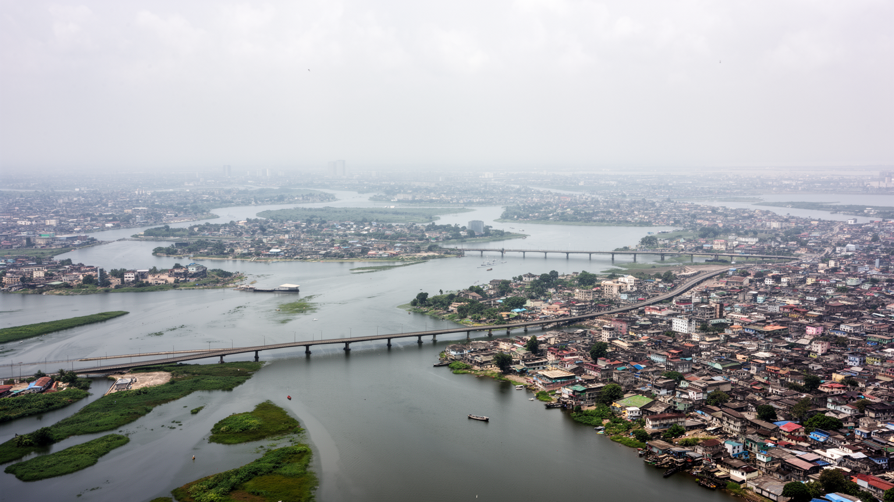
ラゴスの地理は、大西洋の砂州、ラグーン、島、本土がつくる複雑な水際から始まる。ラゴス島には旧市街と官庁、商業地が積み重なり、ビクトリア島やイコイは金融、外交、高級住宅、ホテルを抱える。本土側にはヤバ、スルレレ、イケジャ、アパパ、無数の住宅地と市場が広がり、橋と幹線道路がそれらを細い結節点でつなぐ。水は景観を美しくするだけでなく、洪水、排水、埋め立て、漁業、通勤、港湾、土地価格を左右する実務的な条件である。低地に急速な人口流入が重なったため、雨季の浸水、道路の損傷、廃棄物の流出は日常的な課題になる。一方で、ラグーン沿いの眺望や人工島の開発は、都市の野心と投資を象徴する。水辺を読むと、ラゴスが自然条件を克服して伸びる都市であると同時に、その条件から逃れられない都市であることが見える。橋を渡る移動は、所得、職場、住宅、学校、余暇の距離を変え、同じ地図の中に複数の時間感覚を生む。水上交通の可能性は大きいが、桟橋、安全、料金、運航の信頼性が整わなければ、道路渋滞を本格的には減らせない。水際の未来は、開発の豪華さだけでなく、排水と暮らしを守る公共性で測られる。漁村の記憶、植民地期の港、現代の埋め立て地が同じ水面に向き合うため、ラゴスの地図は常に過去の岸辺と新しい都市計画のせめぎ合いを示している。
ラゴスの経済を支える大きな装置は、アパパやティンカン島の港湾である。輸入コンテナ、燃料、機械、食品、消費財はここからナイジェリア内陸へ流れ、反対に農産物や製品、商人の資金が都市へ集まる。港は国家財政、関税、外貨、製造業、卸売市場、道路輸送を結ぶため、岸壁の混雑や手続きの遅れはすぐ物価と商売に響く。トラックが道路をふさぎ、倉庫、修理工場、食堂、運送会社、税関関連の仕事が周囲に密集する光景は、港湾都市としてのラゴスをよく示している。近年はレッキ深水港のような新しい物流拠点も整備され、巨大船、自由貿易区、工業団地、都市東部の開発を結びつけようとしている。だが港の近代化は、既存の労働者や小規模業者、道路沿いの生活を置き去りにしやすい。ラゴスの港湾経済は、国際貿易の数字だけではなく、荷役、通関、運転、警備、露店、金融サービスの細かな仕事で動く。港が止まれば都市の収入も生活物資も揺らぐため、ここはナイジェリア経済の喉元である。物流の改善は成長の条件だが、交通事故、排気ガス、住環境の悪化を減らす都市政策と合わせて進めなければ、港の利益は広く届かない。港の周辺では、公式な税収と非公式な手数料、国家の管理と現場の交渉が絡み合い、コンテナ一つの遅れが小売価格や工場の稼働時間まで変えてしまう港湾都市型だ。
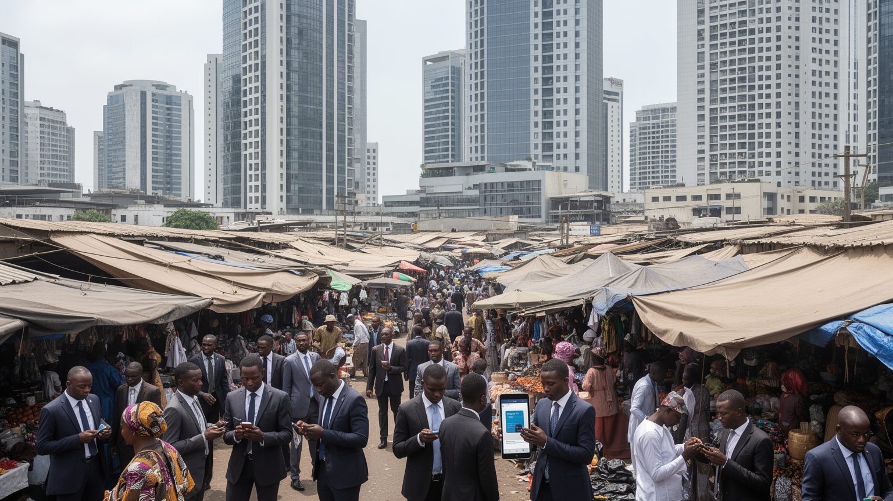
ラゴスはナイジェリア最大の商都であり、銀行、保険、通信、広告、法律、会計、投資、スタートアップが集まる。ビクトリア島やイコイの高層オフィスでは、石油収入、輸入、通信契約、フィンテック、消費市場をめぐる取引が進む。一方で、バログン市場やオショディ周辺の商い、路上販売、修理、両替、携帯電話の小売は、同じ都市の別の金融回路を作る。多くの住民は銀行口座、モバイル決済、現金、信用販売、親族間の送金を使い分け、公式統計に入りにくい経済を支えている。ラゴスの商業力は人口の厚さと起業の速さから生まれるが、インフレ、通貨安、輸入規制、停電、家賃、交通費は事業を不安定にする。巨大な需要があるから店は増え、競争が激しいから利益は薄くなる。フィンテック企業は決済や融資を便利にし、若い技術者や営業職に仕事を生むが、データ管理、過剰債務、詐欺への備えも必要になる。ラゴスの金融と商業は、洗練された会議室と混雑した市場を切り離しては理解できない。どちらも信用、速度、情報、人脈に依存し、都市の不確実性に対応する知恵を蓄えている。商人の移動範囲は国内を越えて広がり、中国、ドバイ、近隣諸国との仕入れ網も街の値札に反映される。若い起業家は停電や通信障害に備えて複数の手段を持ち、商人は価格変動を見越して在庫と現金を動かす。都市の商才は、制度の弱さを補う実践でもある。
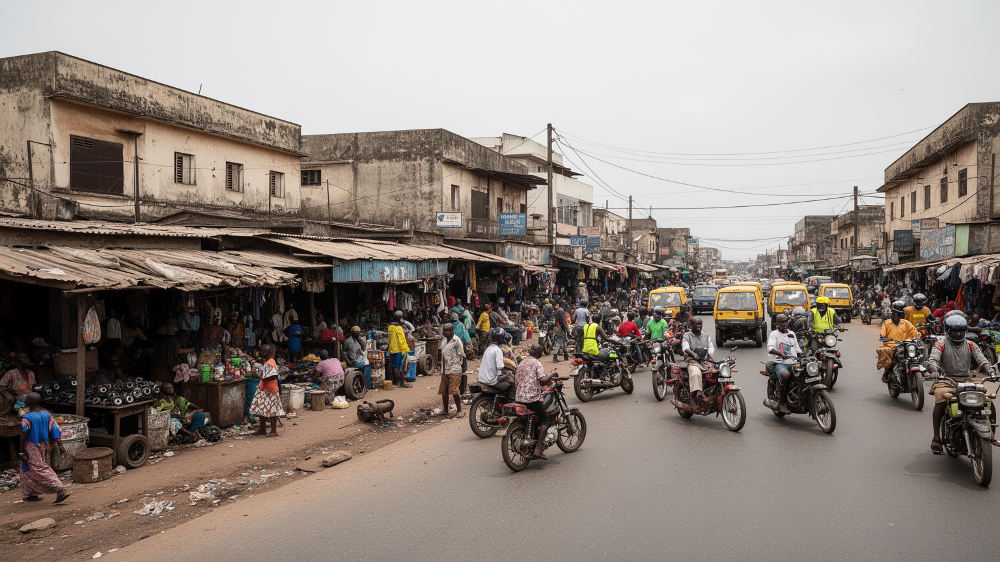
ラゴスの成長を理解するには、非公式経済を中心に置く必要がある。露店、屋台、オカダや三輪タクシー、バスの呼び込み、荷運び、家事労働、警備、清掃、修理、建設の日雇い、携帯電話の充電サービスまで、無数の小さな仕事が都市の隙間を埋めている。これらは単なる貧困の表れではなく、公共交通、雇用、電力、住宅、信用制度が十分でない環境で、人びとが生活を成り立たせるための柔軟な仕組みである。だが不安定さは大きい。病気、事故、雨、警察の取り締まり、立ち退き、燃料価格の上昇は、その日の収入をすぐ奪う。社会保障や労働法の外側に置かれた働き手は、親族、宗教団体、同郷会、商人組合に頼りながらリスクを分散する。都市政策が街路を整理する時、非公式な働き手を障害物としてだけ扱うと、生活の基盤を壊してしまう。ラゴスの労働は、正規雇用の少なさを嘆くだけでなく、そこにある技能、時間管理、交渉力、移動力を読む必要がある。朝のバス停で客を集める声や、渋滞中に商品を売る歩行者は、都市の需要を最も早く感知する人びとである。包摂的な成長とは、彼らを消すことではなく、安全と権利を持つ都市の担い手として位置づけることである。市当局が登録や税、衛生基準を整えるなら、排除ではなく段階的な支援が欠かせない。小さな商いを守ることは、都市の食、移動、介護、修理を守ることでもある。
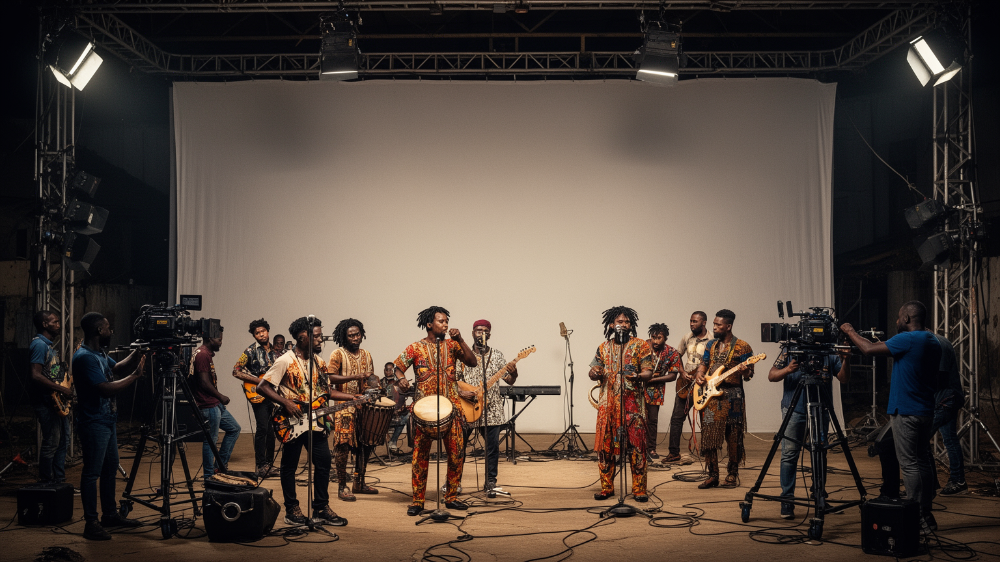
ラゴスはノリウッドとアフロビーツの中心地として、アフリカ都市文化を世界へ押し出している。映画制作は大規模スタジオだけでなく、脚本家、俳優、照明、衣装、編集、配信、マーケティング、劇場、ストリーミングの連なりで成り立つ。短い制作期間と限られた予算から生まれた機動力は、家族、宗教、恋愛、詐欺、成功、都市の緊張を素早く物語化してきた。音楽では、クラブ、教会、ラジオ、スタジオ、ストリート、オンライン配信が結びつき、ラゴスのリズムはロンドン、アトランタ、ヨハネスブルグ、アクラへ広がる。華やかなスターの背後には、マネージャー、ダンサー、映像作家、ヘアメイク、警備、運転手、会場スタッフの労働がある。文化産業は若者に憧れと仕事を与える一方、著作権、報酬の遅れ、過酷な制作、ジェンダー差別、成功者と無名の作り手の格差を抱える。ラゴスの映像と音楽は、都市の騒音や渋滞をただ背景にせず、生き抜く速度と自己表現へ変えている。海外の聴衆が踊る曲にも、地元の言葉、家族の期待、教会の響き、市場の商売感覚が混じる。文化を観光資源として消費するだけでなく、作り手の労働条件と表現の自由を見れば、ラゴスの創造力はさらに立体的に見える。作品は移民の誇りも運び、国外で暮らすナイジェリア人に故郷の言葉や冗談を届ける。文化の流通は外貨やブランド価値だけでなく、都市への帰属意識も育てている。
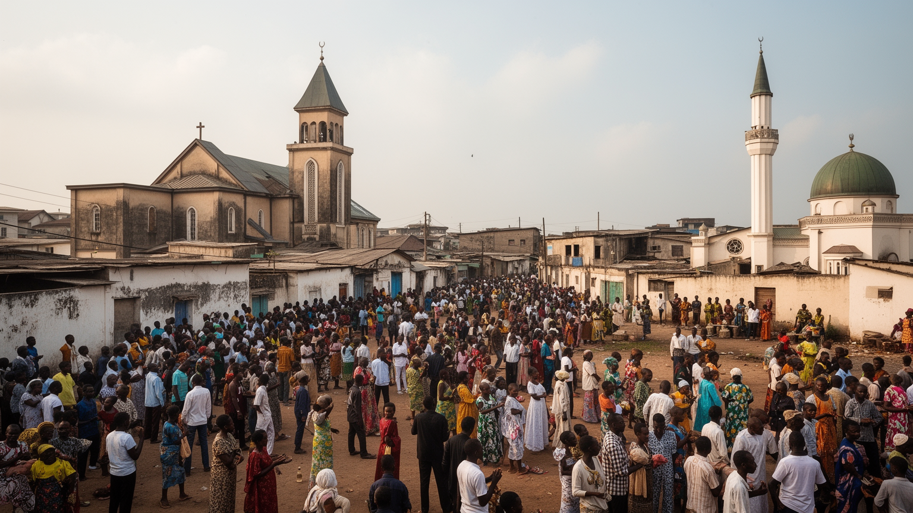
ラゴスの宗教生活は、教会、モスク、家庭の祈り、路上の説教、音楽、慈善、商売の倫理を通じて都市のリズムを作る。ナイジェリア南西部のヨルバ社会ではイスラム教とキリスト教が長く共存し、家族の中に異なる信仰が並ぶことも珍しくない。ペンテコステ派教会は巨大な礼拝、癒やし、起業精神、教育、メディア発信を結び、モスクは礼拝、相互扶助、商人ネットワーク、地域の規範を支える。信仰は貧困や不安の中で希望を与え、移住者に居場所を提供し、病気や葬儀、学費、仕事探しの助けにもなる。一方で、宗教指導者の影響力、献金の負担、性別役割、政治との距離をめぐる議論もある。週末の礼拝や大規模集会は交通の流れを変え、都市の音風景を大きくする。ラゴスでは信仰を私的な内面だけで捉えることはできない。教会のホール、モスクの中庭、宗教学校、ラジオ番組、祈りの看板は、都市住民が不確実な生活をどう意味づけるかを示している。宗教共同体は時に出身地や階層を越える橋になり、時に排除や競争を生む。祈りとビジネス、慈善と野心が近くにあることが、ラゴスの公共空間を独特にしている。都市の精神的な地図は、道路地図と同じほど生活を左右する。礼拝の音、断食明けの食事、葬儀の列、子どもの命名式は、都市が単なる労働市場ではなく、人生の節目を共有する場所であることを思い出させる。
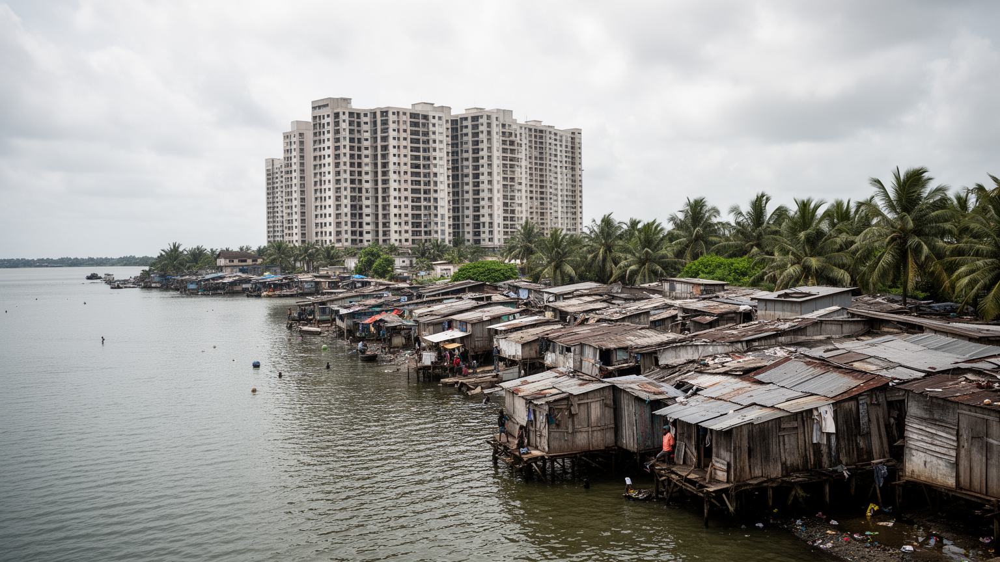
ラゴスの住宅問題は、人口増加、土地不足、所得格差、投資、行政能力が交差する場所にある。イコイやビクトリア島、レッキでは高級住宅、ゲーテッドコミュニティ、ショッピングモール、ホテルが増え、発電機、警備、私設インフラを備えた生活が成立する。反対に、マココの水上集落や本土の過密地区では、排水、衛生、電力、学校、医療へのアクセスが不十分なまま、多くの人が都市の仕事に近い場所を求めて暮らす。家賃の上昇は若者や低所得世帯を遠い郊外へ押し出し、通勤時間と交通費を増やす。再開発や立ち退きは、都市の景観を整える政策として語られやすいが、住民の仕事、近隣関係、学校、宗教共同体を一度に壊す危険がある。住宅は単なる建物ではなく、都市で働く権利に近い。公営住宅、土地権利、賃貸保護、排水整備、公共交通を組み合わせなければ、成長の果実は限られた地区に偏る。ラゴスの住まいを読むと、世界都市としての野心と、基礎的な生活環境を整える課題が同時に見える。豪華な海辺の開発と、雨の日に床上浸水を心配する家族は同じ都市圏にいる。都市の未来は、高層ビルの高さだけでなく、低所得者が安全に住み続けられるかで判断されるべきである。住宅地の距離は通勤と教育を変え、住所は就職や結婚の印象にも影響する。住まいの格差は、毎日の時間と尊厳の格差として現れる。
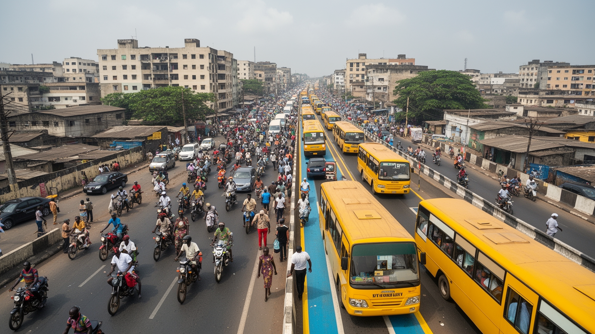
ラゴスの生活時間は、しばしば交通によって決まる。島と本土を結ぶ橋、港周辺のトラック、幹線道路、バス、ダンフォ、配車サービス、三輪タクシー、歩行者が一斉に動き、朝夕の渋滞は仕事、学校、家族の時間を削る。距離が短くても移動に何時間もかかることがあり、住む場所の選択は家賃だけでなく、渋滞をどれだけ避けられるかに左右される。交通の混雑は燃料費、物価、配送、救急、空気の質にも影響し、都市の生産性を大きく下げる。バス高速輸送や鉄道整備、水上交通の拡充は改善の道筋だが、運行の信頼性、乗り換え、料金、安全、歩道の整備がそろわなければ、多くの住民には使いにくい。非公式な交通は混沌として見える一方、都市の需要に柔軟に反応し、正式な路線が届かない地区を支える。取り締まりだけでは移動の現実を解決できない。ラゴスの交通を考えることは、時間の公平性を考えることでもある。長い通勤は睡眠、学習、育児、健康を奪い、低所得者ほどその負担を避けにくい。道路を増やすだけでなく、職住の近さ、公共交通、歩ける街路、港湾物流の分散を組み合わせることが、都市の余白を取り戻す条件になる。駅や停留所の周辺に安全な歩道、日陰、照明、雨を避ける場所があるかどうかも、移動の質を大きく変える。交通政策は車の流れだけでなく、人の疲労を減らす政策である。
ラゴスの食と市場は、都市の多民族性と生活の工夫をよく表す。バログン市場、レッキの店、路上の屋台、住宅街の小さな食堂では、ジョロフライス、スヤ、エグシスープ、ペッパースープ、豆の料理、揚げバナナ、魚料理が売られ、仕事の合間の短い食事から祝宴までを支える。食材は国内各地や近隣国、輸入品の流通に依存し、燃料価格や通貨安、道路事情はすぐ食卓に響く。市場は買い物の場であるだけでなく、信用、情報、雇用、政治的な動員、移住者の出会いの場でもある。女性商人の力は大きく、仕入れ、値付け、交渉、貯蓄、家族の教育費を通じて都市経済を支える。観光客にとって市場は色彩と活気の場所だが、そこで働く人には暑さ、混雑、保管、衛生、家賃、立ち退きの問題がある。ラゴスの食文化は洗練されたレストランだけでなく、渋滞中に売られる軽食、深夜の屋台、教会やモスクの集会後の食事にも宿る。味は出身地の記憶を運び、新しい都市の友情を作る。急成長する中間層はカフェや宅配を広げるが、日々の食を支える小商いが失われれば都市の柔軟性も弱まる。市場を歩くことは、ラゴスの物流、家計、ジェンダー、移民を一度に見ることである。食の価格は政治への不満にも直結し、米や油、燃料の値上がりは家計だけでなく街の会話を変える。食卓の変化は、都市経済の最も身近な指標である。
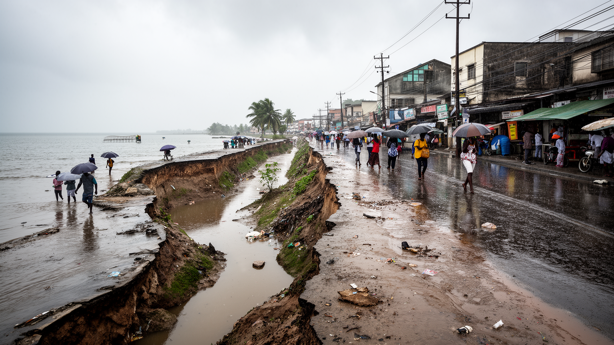
ラゴスは熱帯の沿岸低地にあり、気候変動の影響を受けやすい都市である。雨季の豪雨、高潮、海岸侵食、排水不良、廃棄物の詰まりは、道路、住宅、学校、市場、医療へのアクセスを妨げる。低所得地区ほど水害への備えが弱く、床上浸水や汚水の流入は健康被害と家計負担を増やす。海辺の高級開発は防潮や埋め立てによって価値を高めるが、その影響が周辺の水流や砂の動き、漁民の生活に及ぶこともある。気候リスクは遠い未来の話ではなく、雨の日の通勤、商品の保管、子どもの通学、病院への移動を左右する現実である。廃棄物管理、排水路の維持、湿地の保全、公共交通、建築規制、早期警報を組み合わせなければ、都市の脆弱性は人口増加とともに拡大する。一方で、若い技術者や地域団体、清掃活動、リサイクル事業は新しい対応を試している。ラゴスの環境問題は、汚れた景観を嘆くだけでは足りない。誰が安全な土地に住めるのか、誰が水害後に仕事へ戻れるのか、誰が復旧費を払うのかを問う社会問題である。沿岸都市としての未来は、華やかな海辺の開発よりも、脆弱な地域を守る公共投資にかかっている。暑さも見逃せない。屋外で働く売り手や運転手、建設労働者は、日陰や水、休憩を確保しにくく、猛暑は収入と健康を同時に削る。気候対策は生活保護でもある。涼める公共空間も必要だ。
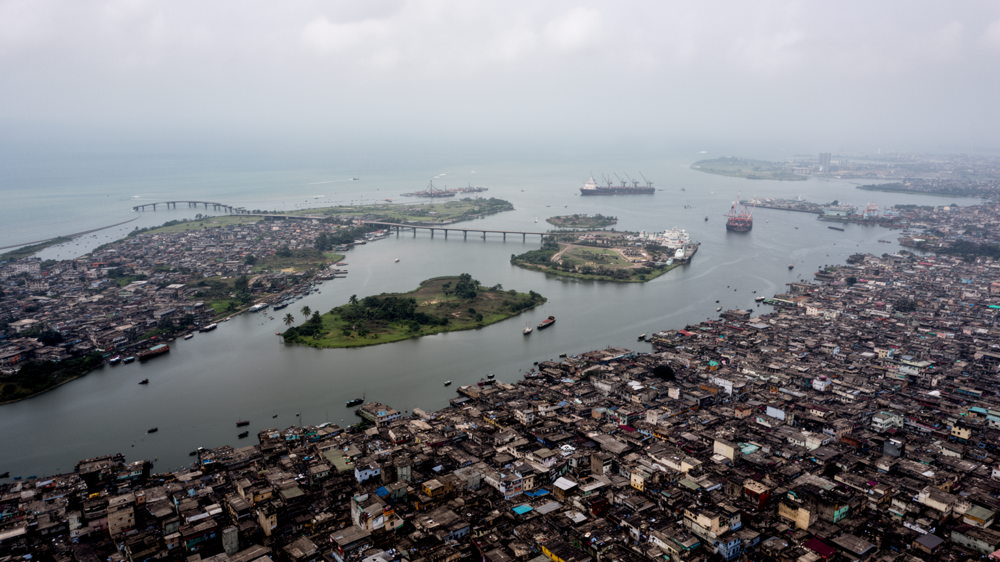
ラゴスは、アフリカの都市化を一つの場所に凝縮して見せる。港湾と金融、ノリウッドと音楽、教会とモスク、市場とフィンテック、海辺の高級開発と水上集落、長い渋滞と移動の知恵が同時に存在する。正式首都ではなくなっても、政治家、企業、メディア、若者、移民が注目する実質的な中心であり続ける。都市の魅力は、混沌を活力として語るだけでは捉えきれない。停電、洪水、治安、住宅費、非公式労働、教育や医療への不平等は、人びとの才能を消耗させる現実である。逆に、問題だけを見れば、ラゴスの起業精神、文化の発信力、宗教共同体の支え、商人のネットワーク、若者の創造性を見落とす。必要なのは、成長と脆弱性を同じ地図に置く視点である。橋を渡る通勤、港のトラック、市場の値段交渉、礼拝の歌、映画撮影、雨季の排水路、ビーチの週末は、別々の断片ではなく都市を動かす連続した力である。ラゴスを読むことは、二十一世紀の巨大都市がどのように富を生み、誰に負担を押しつけ、どんな文化で希望を語るのかを読むことでもある。世界都市としての評価は、投資額だけでなく、住民が安全に働き、移動し、住み続けられるかで測られる。だからこそ、ラゴスは一つの成功物語にも失敗物語にも収まらない。都市の力は、矛盾を抱えたまま人を引き寄せ、暮らしを更新し続ける粘り強さにある。